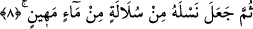
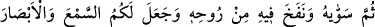
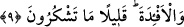
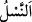
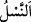

dört unsurdan. Ancak bu dört unsurdan toprak daha belirgin olduğundan toprağı zikretti.
Âdem’in toprağını Mekke ile Tâif arasında, bir rivâyete göre kırk gün, bir rivâyete göre
kırk yıl, bir başka rivâyete göre de kırk bin yıl besledi ve terbiye etti. “Âdem’in
toprağını kudret ellerimle kırk sabah yoğurdum.”[117] kudsî hadîsinin mânâsı budur. ”
Keşfü’l-esrâr’da ise şöyle denilmiştir: “Mizacı/karakteri/tabîatı çamurdan olan bu
cevhere ne zarar ve ziyan gelebilir? İnsanoğlunun kemalini gönle koymuş. Onun sâhip
olduğu kıymet, terbiye sebebiyledir, topraktan değildir. İnsanoğlunda olan sır, ne arşta,
ne kürsîde, ne felekte, ne de melekte vardır. Çünkü bu sayılanların hepsi mücerred
kullardır; insanoğlu ise hem kul, hem de dostlardandır.”
8. Sonra onun neslini bir öz sudan, değersiz bir sudan yarattı.
“Sonra onun neslini” zürriyetini “bir öz sudan,” yâni insanın sulbünden çıkarılan bir
nutfeden, Kâşifî’nin dediğine göre babanın sulbünün hülâsasından çıkartılmış
“değersiz” el-Kâmus’ta belirtildiği gibi değersiz ve zayıf “bir sudan” meniden
“yarattı.”
İnsanın zürriyetine, insandan kopup ayrıldığı için “ (nesil)” denilmiştir. Nitekim
el-Müfredât’ta şöyle der: “ bir şeyden ayrılıp kopmak demektir. Babasından kopup
bir şeyden ayrılıp kopmak demektir. Babasından kopup
ayrıldığı için çocuğa/kişinin zürriyetine de “ denilmiştir.”
9. Sonra onu tamamlayıp şekillendirmiş, ona kendi rûhundan üflemiştir. Ve sizin
için kulaklar, gözler, kalbler yaratmıştır. Ne kadar az şükrediyorsunuz!
“Sonra onu tamamlayıp şekillendirmiş,” yâni insan neslini ana rahminde uzuvlarını
tamamlayarak ve gerektiği gibi ona şekil vererek düzeltip kıvamına erdirmiştir. Kâşifî
şöyle der: “Sonra Âdem’in kalıbını düzeltti.” der. Nesefî de der ki: “Âdem’in
tamamlanıp şekillendirilmesinden murad, uzuvlarının birbirine eşit olmasıdır. Yâni,
dört unsurun cüzlerinin [eller, ayaklar, gözler ve kulaklar] eşit/denk olmasıdır. Kalıbın
şekillendirilmesi, şeffaflaşıp her şeyi aksettirmesi ve şekil kabul etmesi için demirin
ateşle terbiye edilmesine benzer.”
“Ona kendi rûhundan üflemiştir.” Allah, şeref bahşetmek, insanın hârika ve şerefli
bir mahluk olduğunu, onun rubûbiyyet mertebesi ile özel bir münâsebeti bulunduğunu